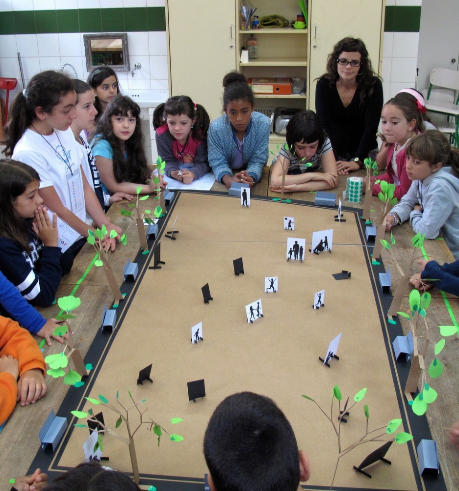
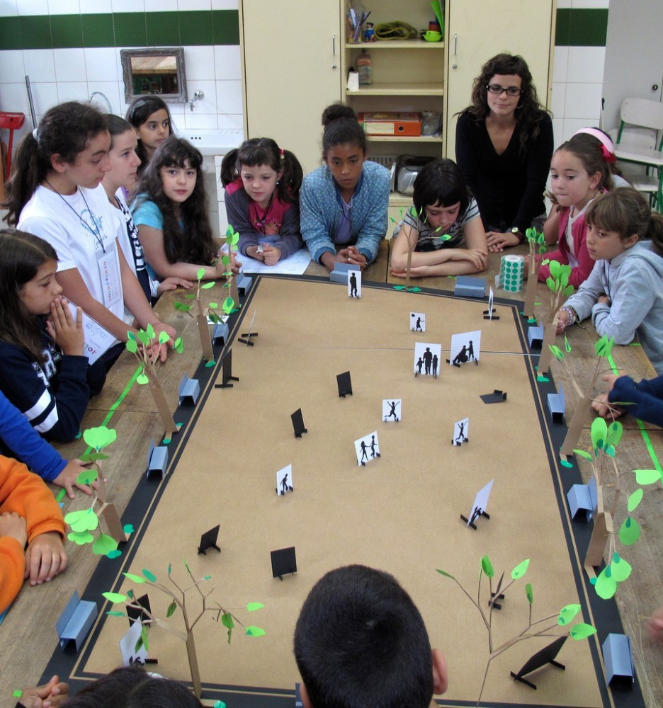

Cajita Ordenada
Conscientes de la importancia de atender la formación de los niños en el tema de ciudad, se diseñó el programa de participación infantil Cajita Ordenada, abriendo un canal de comunicación directa con ellos.
Comenzó en el Ciclo escolar 2015-2016 y hasta el momento hemos visitado a 3,981 niños de 31 diferentes escuelas de la ciudad de Chihuahua, desde entonces hasta el día de hoy.
Objetivo Principal
Promover una Pedagogía Urbana y una Participación Ciudadana infantil.
Objetivos secundarios
Generar en los niños de manera sencilla, el conocimiento básico sobre el complejo sistema que es una ciudad. Lograr la comprensión de que existe un entorno físico creado por el hombre y la existencia de un entorno social que lo moldea, así como un entorno natural en el que se desarrolla.
Promover la reflexión sobre los elementos urbanos para lograr una experiencia física diferente dentro de su ciudad.
Enseñarles que existen problemas en la ciudad que son atendidos por especialistas en muchas disciplinas.
Acercarles el mensaje en el sentido de que concebimos a la niñez como posibilidad y realidad de cambio y que no es necesario esperar «a que sean grandes» para que puedan participar.
Sustento Legal
Asociación Internacional de
Ciudades Educadoras
LA LEY GENERAL DE DERECHOS DE LAS NIÑAS, NIÑOS Y ADOLESCENTES
ARTÍCULO 2.- Para garantizar la protección de los derechos de niñas, niños y adolescentes, las autoridades realizarán acciones y tomarán medidasde conformidad con los principios establecidos en la presente Ley. Para tal efecto, deberán:
- Garantizar un enfoque integral, transversal y con perspectiva de derechos humanos del diseño y la instrumentación de políticas y programas de gobierno.
- Promover la participación, tomar en cuenta la opinión y considerar los aspectos culturales, éticos, afectuosos, educativos y de salud de niñas, niños y adolescentes, en todos aquellos asuntos de su incumbencia, de acuerdo a su edad, desarrollo intelectual, cognoscitivo y de madurez
REGLAMENTO DEL INSTITUTO MUNICIPAL DE PLANEACIÓN URBANA
OBJETIVO ESPECIFICO
ART. 7- Fomentar una conciencia colectiva de desarrollo municipal.
ATRIBUCIONES DEL EQUIPO TÉCNICO
ART. 8
VI) Difundir la información que considere necesaria para el cumplimiento de sus fines, por cualquiera de los medios que el propio instituto determine.
IX) Proponer planes y programas para preservar y restaurar el equilibrio ecológico dentro del municipio de Chihuahua.
Proyectos similares
Colectivo Arkitente. España
El Proyecto de Participación infantil para Co-diseñar con los niños la plaza Mateo Hernández de Portugalete, España.
Nace de una idea del Área de Participación Ciudadana e Innovación Social.
Colectivo Judgend Architektur Stadts, (JAS). Alemania
“La ciudad de hoy es producto de nuestros padres y abuelos, la ciudad de mañana, será producto de nosotros y de los niños. Es por eso que el trabajo debe ir enfocado a eso.”
 

Otros proyectos con participación infantil
“Cuando niños, niñas y adolescentes empiezan a cuestionarse prácticas e ideas que manejamos las personas adultas acerca de cómo funciona el mundo, de qué es lo mejor para todas y todos y de cuáles son los modos de vivir mejor. Este cuestionamiento puede constituirse en un puntapié del cambio.“
UNICEF. Global infancia Paraguay
Estrategia
El equipo del IMPLAN visita a los niños en sus salones de clase, llevándoles el mensaje adaptado según su edad a todos los grados desde 1° hasta 6°. Los materiales presentados son:
- Video animado introductorio (presentación)
- Plática ecológica interactiva
- Maqueta gigante (lona con traza urbana impresa y 33 elementos urbanos manipulables)
- Video musical con tema ecológico de las 3R’s (cierre)
Temas abordados:
-
El niño y la ciudad:
- Equipamiento Urbano
- Movilidad
-
El niño y su barrio:
- Espacio Público
- Equipamientos de proximidad
- Comercio, abasto y servicios
-
El niño y su comunidad
- Salud pública
- Derecho a la participación
- Identidad y patrimonio
-
El niño y su medio ambiente
- Manejo de residuos
- Aplicación de las 3R's
-
Otros temas:
- ¿Que hace el IMPLAN?
- Concepto Planeación Urbana
- Escalas y Jerarquías
- Valores como: Orden, responsabilidad
- Participación ciudadana infantil
- Las 3R's (Reducir, Reutilizar, Reciclar)
- Ecología como práctica positiva
- Entorno e identidad
- Elementos actuales en mi ciudad
- Igualdad de género